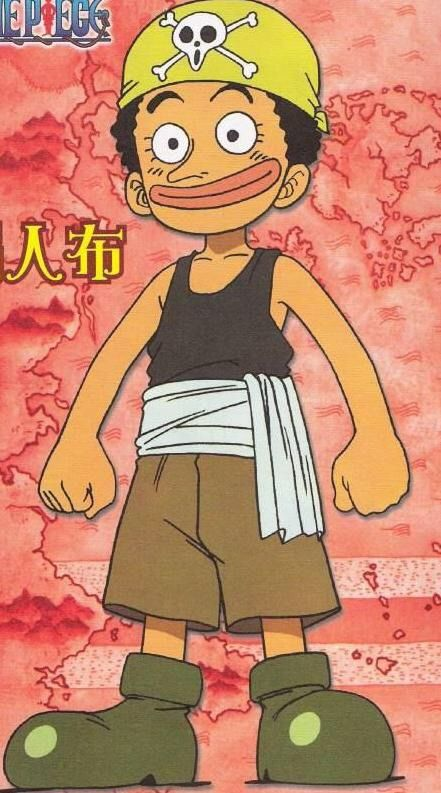
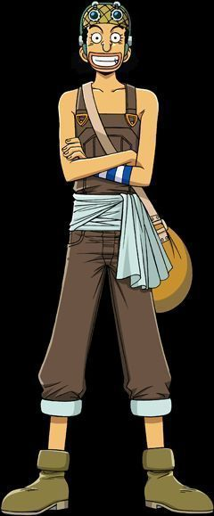
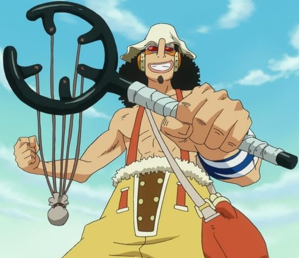
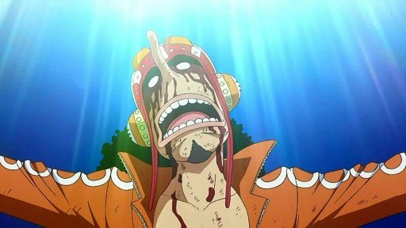

Etapas de usopp One Piecce
🔹 Fase 1 — Infancia / Orígenes antes de unirse a los Sombrero de Paja

- Usopp nació en Syrup Village; su madre enfermó, y él empezó a “simular ataques de piratas” para animarla — a veces con exageraciones, fantasías y mentiras.
- Tras la muerte de su madre, Usopp siguió usando las mentiras como escape emocional — adoptó un grupo de niños como su “tripulación ficticia” (los “Usopp Pirates”) y les contaba historias de aventuras para entretenerlos y soñar.
- En esta fase su carácter es más de soñador, cobarde, con mucha imaginación, pero con miedo, inseguridades y mucha fantasía: muchas veces oculta su dolor atrás de mentiras y humor.
🔹 Fase 2 — Pre-Timeskip / Al unirse a los Sombrero de Paja — Pirata y francotirador aprendiz

- Después de los eventos en Syrup Village, Usopp se une a la tripulación de los Straw Hat Pirates como su francotirador.
- Su rol: artillero, tirador, apoyo desde lejos — a menudo usando su puntería, ingenio, trampas o tácticas — aunque no siempre confiando en sí mismo, y siendo consciente de sus limitaciones.
- Su carácter sigue algo cobarde, pero con desarrollo: comienza a mostrar lealtad, compañerismo, temor pero también determinación cuando sus amigos/compañeros están en peligro.
- Apariencia típica de “pirata aprendiz”: figura delgada, nariz larga característica, ropas simples, gafas o bandana — muy distinto de su versión madura después del salto de tiempo.
🔹 Fase 3 — Post-Timeskip / Evolución física, técnica y psicológico

- Tras el salto temporal de dos años, Usopp regresa con cambios visibles: cuerpo más fuerte, cambio de estilo visual (ropa distinta, físico más robusto), reflejando que entrenó duro mientras estaba separado de la tripulación.
- Sus habilidades como francotirador se vuelven más precisas, su arsenal crece, sus tácticas mejoran; ya no es solo un “tirador inseguro”, sino un miembro más confiable en combates, con valentía relativa y convicción.
- A nivel interno, su crecimiento incluye aceptación de sus miedos y limitaciones — a veces sigue teniendo temor, pero su evolución muestra que está dispuesto a hacerlo por sus amigos.
🔹 Fase 4 — Madurez, rol definido, valentía & compromiso — “Sniper King / God Usopp”

- En esta fase, Usopp ya es parte sólida de los Straw Hat. Ha construido confianza, experiencias, victorias, derrotas, crecimiento interior. Su rol de francotirador/estratega se consolida.
- Ya no solo depende del miedo o de las mentiras: aunque mantiene su personalidad, se le reconoce como “guerrero” — alguien que puede realmente aportar, aunque de forma distinta a los fuertes físicos.
- Su carácter mezcla valentía, astucia, liderazgo informal, sacrificio y su deseo de apoyar a sus amigos — incluso si tiene miedo. Este balance de “humano + guerrero imperfecto” lo define ahora.